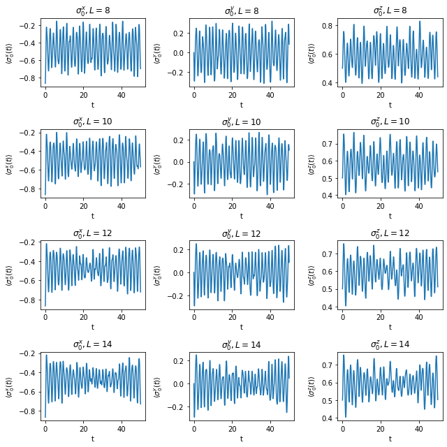

Dynamical ETH
$ \require{physics} \def\bm{\boldsymbol} \def\indx{\sigma_1, \dots, \sigma_L} \def\ind{\tau_1, \dots, \tau_L} $
import numpy as np
import pandas as pd
from scipy import optimize
import matplotlib.pyplot as plt
%matplotlib inline
from ph121c_lxvm import models, data, tests, measure, tensor, basis
The model we will study in this notebook is: $$ H = \sum_{j=1}^L \sigma_j^z \sigma_{j+1}^z - h^x \sum_{j=1}^L \sigma_j^x - h^z \sum_{j=1}^L \sigma_j^z . $$ We are interested in the fact that $h^z \neq 0$ makes this TFIM Hamiltonian non-integrable, and creates eigenstate thermalization. We set the following generic parameter values:
hx, hz = (-1.05, 0.5)
Time evolution of an initial state
Our initial state will be $$ \ket{\psi (t=0)} = \ket{\xi}_1 \otimes \cdots \otimes \ket{\xi}_L , $$ with $\ket{\xi} = \frac{1}{2} \left( \ket{\uparrow} - \sqrt{3} \ket{\downarrow}\right)$. It is a translation-invariant state because
xi = np.array([-np.sqrt(3), 1]) * 0.5
Goal
We are interested in time-evolving this state, which we can do in the energy eigenbasis, where: $$ \ket{\psi} = \sum_{\indx=0}^{1} a_{\indx} \ket{\indx} = \sum_{n=1}^{2^L} c_n \ket{n} , $$ where $c_n = \sum_{\indx} a_n \braket{n}{\indx}$. For brevity, let us replace the index $\indx$ of the computational basis with $i$, which we think of as a binary number. The time evolution of an operator in the energy basis, where $H \ket{n} = \epsilon_n \ket{n}$, can be described by: $$ \ev{O}{\psi(t)} = \sum_{n, m} c_m^* c_n e^{-i(\epsilon_n - \epsilon_m)t} \mel{m}{O}{n} . $$
Shu Fay told me it took hours to run code to do this, so I decided I would think about how to cast the problem efficiently. We could represent the sum above as the sum of the entries of a matrix in the energy basis, where initially each element is $c_m^* c_n \mel{m}{O}{n}$ and we update this at each time step of duration $\Delta t$ by multiplying with $e^{-i(\epsilon_n - \epsilon_m)\Delta t}$. We would find that each time step incurs $2^{2L}$ multiplications followed by summing $2^{2L}$ elements together. This is a fine way of doing the problem.
I wanted to use the fact we know the Pauli operators very well in the computational
basis. In fact, we know that they have precisely $2^L$ nonzero elements, and we
can calculate these elements with bitwise operations. We can use resolution of
the identity to write:
\begin{align}
\ev{O}{\psi(t)}
&= \sum_{i=0}^{2^L-1} \sum_{j=0}^{2^L-1} \sum_{n, m}
c_m^* c_n e^{-i(\epsilon_n - \epsilon_m)t}
\braket{m}{\indx}\mel{i}{O}{j}\braket{j}{n}
\\
&= \sum_{i=0}^{2^L-1} \sum_{j=0}^{2^L-1} \mel{i}{O}{j}
\left( \sum_{n} c_n e^{-i\epsilon_n t} \braket{j}{n} \right)
\left( \sum_{m} c_m e^{-i\epsilon_m t} \braket{i}{m} \right)^*
.
\end{align}
For $O = \sigma_k^\mu$ where $k \in {1, \dots, L }$ and $\mu \in {x, y, z}$,
we have binary formulas acting on site $k, k-1, k+1$ that give us the matrix
elements $\mel{i}{O}{j}$. In fact, we know $j$ to be a function of
$i$, so we will write $j(i) = i$.
Therefore we have succesfully eliminated one of the indices:
\begin{align}
\ev{O}{\psi(t)}
&= \sum_{i} \mel{i}{O}{j(i)}
\left( \sum_{n} c_n e^{-i\epsilon_n t} \braket{j(i)}{n} \right)
\left( \sum_{m} c_m e^{-i\epsilon_m t} \braket{i}{m} \right)^*
.
\end{align}
This means that when $j(i) = i$ which is true for diagonal operators
such as $\sigma_k^z$, we can also limit the complexity of the problem to $2^{2L}$
sums and multiplications, without ever having to change basis.
Note that in this case, $\braket{i}{m}$ is just a matrix element of one of
the eigenvectors returned by the diagonalization routine.
Implementation
I wrote code to do this time evolution in Fortran, and basically it does a loop over the physical index and the inner indices are just sums over vectors. I used OpenMP directives to speed the loop over the $\indx$ index in my Fortran code which cut the runtime in half compared to the serial version. 4 threads fastest.
In short, time evolution on a temporal grid is a computationally intensive task.
I expect this to take a long time to run, so I will make sure to save the results.
After all, it did take me 4 tries before np.linalg.eigh didn’t get itself
killed due to requesting too much memory at $L=14$. When it did work, then
$L=14$ took about 10 minutes to diagonalize (numpy says it uses the syevd
routine from LAPACK, but back in assignment 1, I used the generic syev routine
from MKL LAPACK and $L=14$ only took 2 minutes there).
All of the diagonalization runtime information lives in the metadata of my HDF5
archive, but I’m too slow to get it out. All I know is that my appendix to
assignment 2 demonstrates the code to talk with the archive.
%%time
dt = 0.05
Nstp = 1000
bc = 'c'
save = '../../data/wobbles.pick'
try:
df = pd.read_pickle(save)
except FileNotFoundError:
wobbles = {
'Pauli' : [],
'vals' : [],
'L' : [],
}
for L in [8, 10, 12, 14]:
job = dict(
oper=models.tfim_z.H_dense,
oper_params={
'L' : L,
'h' : hx,
'hz': hz,
'bc': bc,
},
solver=np.linalg.eigh,
solver_params={},
)
evals, evecs = data.jobs.obtain(**job)
# Build initial state
psi = 1
for i in range(L):
psi = np.kron(xi, psi)
# Decompose in energy basis
coef = evecs.T @ psi
# Measure 1-site Pauli observables
for which in ['x', 'y', 'z']:
cevecs = (coef * evecs).T.astype('complex')
tevals = np.exp(-1j*dt*evals)
wobbles['L'].append(L)
wobbles['Pauli'].append(which)
wobbles['vals'].append(
measure.evolve.Pauli_ev(
L=L, Nstp=Nstp, which=which, cevecs=cevecs, tevals=tevals,
num_threads=4
)
)
df = pd.DataFrame(wobbles)
df.to_pickle(save)
CPU times: user 2.96 ms, sys: 0 ns, total: 2.96 ms
Wall time: 5.13 ms
Fast time, slow time
I think I’ve been here for about 30 minutes, so let’s just say that’s the time it took to generate all 12 time evolutions (The diagonalization was done previously).
In this case, I ran the code in three separate chunks, and the last runtime was
for $L=14$ and which = 'y':
CPU times: user 1h 41min 23s, sys: 11.4 s, total: 1h 41min 35s
Wall time: 8min 41s
Of that time, $L=12$ took about 30-40 seconds each, so every $L=14$ evolution took about 10 minutes.
Update: after tuning threads, the same code ran faster:
CPU times: user 22min 25s, sys: 931 ms, total: 22min 26s
Wall time: 5min 36s
I wish I did it right the first time!
Results
Let’s display how these expectation values evolve in time, as a function of $L$ and the operator. All the data were iterated 1000 steps at a step size of 0.05.
nrow = 4
ncol = 3
fig, axes = plt.subplots(nrow, ncol)
for i, row in enumerate(axes):
for j, ax in enumerate(row):
ax.plot(np.arange(Nstp)*dt, df.vals[i*ncol + j])
ax.set_title(f"$\sigma_0^{df['Pauli'][i*ncol + j]}, L={df.L[i*ncol + j]}$")
ax.set_xlabel('t')
ax.set_ylabel(f"$\\langle \sigma_0^{df['Pauli'][i*ncol + j]} (t) \\rangle$")
fig.set_size_inches(9, 9)
fig.tight_layout()
plt.show()

It is interesting to see how as $L$ grows, the expectation values appear to contract in the amplitude of oscillation near $t=30$. At longer times, these values appear to grow again, as though some large-scale interference pattern manifests itself across the system. The presence of this slight contraction is a signature of the thermalization of this expectation value at large $L$. While the amplitude at low $L$ appears constant throughout the observation period, the larger system offers more states over which the exponentials that propagate the solution in time can decohere, leading to greater reductions in oscillation amplitude.
Thermal values of observables
Let’s dive into canonical ensemble:
%%time
zzz = lambda x: np.exp(-x * evals)
zz = lambda x: sum(evals * zzz(x))
z = lambda x: sum(zzz(x))
bc = 'c'
graphs = [8, 10, 12, 14]
energies = []
roots = []
betas = np.arange(20) * .1 + .1
nrow = 2
ncol = 2
fig, axes = plt.subplots(nrow, ncol, sharex=True)
for i, row in enumerate(axes):
for j, ax in enumerate(row):
job = dict(
oper=models.tfim_z.H_dense,
oper_params={
'L' : graphs[i*ncol + j],
'h' : hx,
'hz': hz,
'bc': bc,
},
solver=np.linalg.eigh,
solver_params={},
)
evals, _ = data.jobs.obtain(**job)
# Build inital state
psi = 1
for _ in range(graphs[i*ncol + j]):
psi = np.kron(xi, psi)
assert np.allclose(np.linalg.norm(psi), 1)
energies.append(
np.inner(psi, models.tfim_z.H_vec(psi, graphs[i*ncol + j], hx, bc, hz))
)
# Plot beta vs energy
ax.plot(
betas, [ zz(e) / z(e) for e in betas ],
label=f'$E_\\beta$',
)
ax.axhline(
y=energies[-1], xmin=0, xmax=max(betas),
label='$\\langle \\psi \\mid H \\mid \\psi \\rangle$'
)
ax.set_title(f'$L={graphs[i*ncol + j]}$')
ax.set_xlabel('$ \\beta $')
ax.set_ylabel('$E$')
ax.legend()
# Find which beta gives energy of psi
roots.append(
optimize.root_scalar(
lambda x: zz(x) / z(x) - energies[-1],
bracket=[0.1, 1], method='brentq'
).root
)
fig.tight_layout()
plt.show()
CPU times: user 1.9 s, sys: 977 ms, total: 2.88 s
Wall time: 3.5 s
We found the inverse temperature corresponding to the energy of $\ket{\psi}$
at various values of $L$ with scipy's rootfinder:
from pprint import pprint
print('L, beta, Energy')
pprint(list(zip(graphs, roots, energies)))
L, beta, Energy
[(8, 0.6467790651478237, -11.274613391789277),
(10, 0.6468465654548882, -14.0932667397366),
(12, 0.6468575448662777, -16.911920087683917),
(14, 0.6468593322518154, -19.73057343563123)]
Let’s now build the thermal state with this energy and measure the observables in this time-independent state. We’ll have to compute the observables $O \in {\sigma_0^x, \sigma_0^y, \sigma_0^z}$ in the energy basis or vice versa.
!ulimit -s unlimited
%%time
observe = dict(x=[], y=[], z=[])
for i, L in enumerate(graphs):
job = dict(
oper=models.tfim_z.H_dense,
oper_params={
'L' : L,
'h' : hx,
'hz': hz,
'bc': bc,
},
solver=np.linalg.eigh,
solver_params={},
)
evals, evecs = data.jobs.obtain(**job)
therm = np.exp(-roots[i] * evals)
therm = therm / sum(therm)
# Normalize!
therm = therm / np.linalg.norm(therm)
for which in ['x', 'y', 'z']:
cevecs = (therm * evecs).T.astype('complex')
tevals = np.zeros(2 ** L, dtype='complex')
observe[which].append(
measure.evolve.Pauli_ev(
L=L, Nstp=1, which=which, cevecs=cevecs, tevals=tevals,
num_threads=4
)
)
CPU times: user 8.84 s, sys: 8.49 s, total: 17.3 s
Wall time: 11 s
It makes me happy I can use my Fortran code more than once!
With values in hand we make the same plot as before to compare the stationary and thermalizing values:
nrow = 4
ncol = 3
opers = ['x', 'y', 'z']
fig, axes = plt.subplots(nrow, ncol)
for i, row in enumerate(axes):
for j, ax in enumerate(row):
ax.plot(np.arange(Nstp)*dt, df.vals[i*ncol + j])
ax.axhline(observe[opers[j]][i])
ax.set_title(
f"$\sigma_0^{df['Pauli'][i*ncol + j]}, L={df.L[i*ncol + j]}$"
)
ax.set_xlabel('t')
ax.set_ylabel(
f"$\\langle \sigma_0^{df['Pauli'][i*ncol + j]} (t) \\rangle$"
)
fig.set_size_inches(9, 9)
fig.tight_layout()
plt.show()
The plots each display the thermal value as a horizontal line against the time- dependent trace. While $\sigma^y$ remains zero in the thermal state, because a purely real state will vanish in expectation under this traceless and skew-symmetric operator, we do observe that $\sigma^x$ remains close to its thermal value just as soon as it relaxes after a dozen oscillations. On the other hand, it seems like $\sigma^z$ undershoots its thermal value by about 25% for the observation period. It seems like the thermal value I calculated is larger than the $h^z = 0.5$ parameter, which is unlikely to produce the large correlations I’m predicting. Let’s agree that I made some mistake somewhere, or that the translation invariant state just is unable to access so high a correlation.
At least for $\sigma^x$ and $\sigma^y$ we can see that for larger $L$, the time-dependent value narrows onto the thermal value faster.
Entanglement entropy growth with time
Let’s propagate $\ket{\psi}$ as well as another another product state: $$ \ket{\phi} = \ket{\omega}_1 \otimes \cdots \otimes \ket{\omega}_L \qquad \ket{\omega} = \frac{1}{\sqrt{e^2 + \pi^2}} \left( e \ket{\uparrow} - \pi \ket{\downarrow} \right) $$ where $e$ is Euler’s number. We’ll propagate this state in time directly and measure the half-system entanglement entropy.
%%time
om = np.array([-np.pi, np.e]) / np.sqrt(np.e ** 2 + np.pi ** 2)
entropx = dict(L=[], t=[], psi=[], phi=[])
dt = 0.1
Nstp = 60
for i, L in enumerate(graphs):
job = dict(
oper=models.tfim_z.H_dense,
oper_params={
'L' : L,
'h' : hx,
'hz': hz,
'bc': bc,
},
solver=np.linalg.eigh,
solver_params={},
)
evals, evecs = data.jobs.obtain(**job)
tevals = np.exp(-1j * evals * dt)
# Build inital state
psi = 1
phi = 1
for _ in range(L):
psi = np.kron(xi, psi)
phi = np.kron(om, phi)
assert np.allclose(np.linalg.norm(psi), 1)
assert np.allclose(np.linalg.norm(phi), 1)
# change to energy basis
psi = evecs.T @ psi
phi = evecs.T @ phi
for j in range(Nstp):
# measure
entropx['L'].append(L)
entropx['t'].append(j*dt)
entropx['psi'].append(
measure.entropy.entanglement(basis.schmidt.values(
evecs @ psi, np.arange(L // 2), L
))
)
entropx['phi'].append(
measure.entropy.entanglement(basis.schmidt.values(
evecs @ phi, np.arange(L // 2), L
))
)
# propagate
psi = tevals * psi
phi = tevals * phi
df = pd.DataFrame(entropx)
CPU times: user 3min 14s, sys: 1min 12s, total: 4min 27s
Wall time: 2min 1s
fig, axes = plt.subplots(1, 2, sharey=True)
for i, L in enumerate(graphs):
# psi
axes[0].plot(
df.t[df.L == L].values,
df.psi[df.L == L].values / L,
label=f'$L={L}$'
)
axes[0].set_title('$\\psi$')
axes[0].set_xlabel('$t$')
axes[0].set_ylabel('$S_{L/2}/L$')
axes[0].legend()
# phi
axes[1].plot(
df.t[df.L == L].values,
df.phi[df.L == L].values / L,
label=f'$L={L}$'
)
axes[1].set_title('$\\phi$')
axes[1].set_xlabel('$t$')
axes[1].legend()
Indeed, no accidents here. Both states show increasing entanglement entropy over time, which when normalized by the system length leads to a fairly interesting set of characteristic curves. Since all the curves don’t quite collapse onto each, we conclude that, the entropy isn’t some scale-invariant quantity, though all the normalized entropies are in the same region and show similar dynamics.
However, we do have to notice that the the entropy of $\ket{\phi}$ is twice as large as that of $\ket{\psi}$. Perhaps this is due to the transcendental choice of coefficients.
At early times, the product state has no entanglement entropy, but as time goes on, the entropy increases rapidly until it plateaus. Interestingly, in this plateau region, the entropy dips with some periodicity. A scar state, maybe?
In short, lots of entropy means we won’t be able to use MPS for these states.